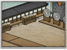

Requires
- Buildings: 
- Arts:

Enables
- Buildings:

- Units:


Basic Building Statistics (can be modified by difficulty level, arts, skills, traits and retainers)
- Cost: 1800
Description
A bow holds the spirit of its maker.
This range allows the training and recruitment of more advanced and skilful bow-armed units. In times of warfare the single archer must use his strength in company. Knowing how to use a bow requires refinement if it is to be used as an effective weapon of war. There are the extra skills of releasing volleys and reloading at speed as part of a group to learn and, hopefully, master. As warfare grew in scale and ferocity, it was no longer enough for individual samurai to fight singly and in search of personal glory and honour. Larger, and cheaper, forces were needed too. Although the bow had been a traditional samurai weapon, and jealously guarded as such, it became sensible to train common ashigaru to use it effectively. They would fire massive volleys at the enemy, rather than try to pick off targets. Arrow bearers would accompany them into battle to carry the huge numbers of arrows required by these tactics. It was also their job, as explained in the "Zohyo Monogatari" written in 1649, to pick up enemy arrows and make sure they were used again! Even after the introduction and use of the arquebus by ashigaru, archers remained an important component of Japanese armies because they could unleash more destruction in a given time than the same number of gunners.